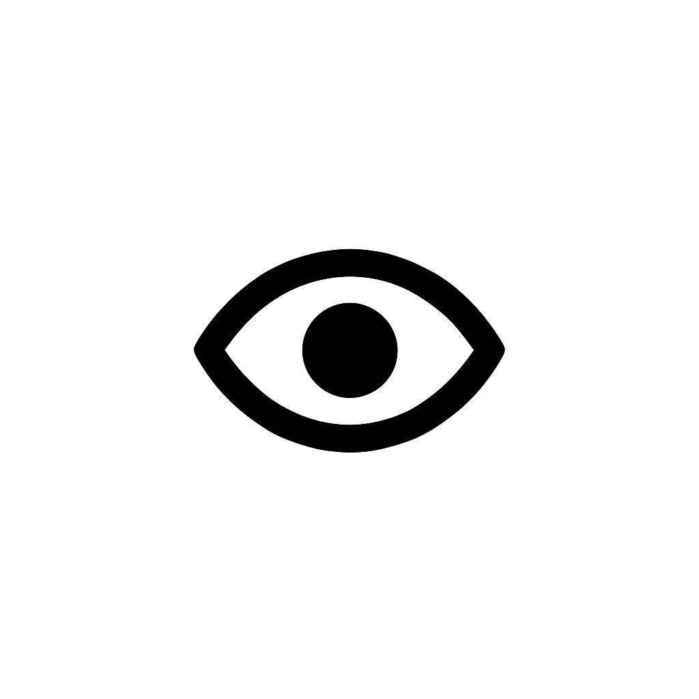

Головний
сервісний
центр
МВС
(044) 290-19-88
✓
Успіхи 2022

Людям із
порушенням
зору
Про ГСЦ
Хто ми
Новини
Структура
Керівництво
Сервісні центри у медіа
Графіки особистого прийому
Успіхи та звіти проєкту «Таємний клієнт»
Євроінтеграція та міжнародне співробітництво
Послуги
Кабінет водія
Е-запис
Контакти
Контакти ГСЦ
Контакти РСЦ та ТСЦ
Розпорядок роботи
Публічна інформація
Запобігання корупції
Надання відомостей з Єдиного державного реєстру транспортних засобів
Електронне звернення громадян
Запит на публічну інформацію
Державні закупівлі
Громадська експертиза
Оголошення
Нормативна база
Колегія
Change language: Eng
Результат перевірки верифікації посвідчення водія:
ПОВЕРНУТИСЯ